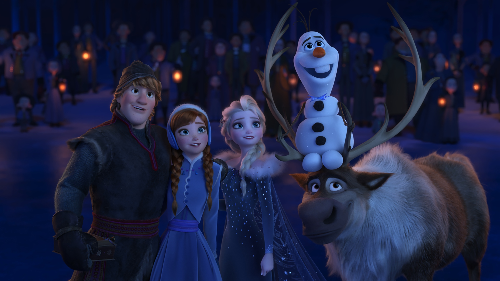

About Olaf
Olaf is a cute little snowman. He really enjoys summer. Olaf is always ready to help his friends, but sometimes gets easily distracted. Maybe his quirks are his best features.
Olaf and his Friends
Olaf's Characteristics
- Stick Arms
- Carrot Nose
- Fun Sized
Olaf's Friends
Olaf has many great friends. Anna and Elsa are amongst his favorites as well as being his creators. Click on the links below to learn more about them: